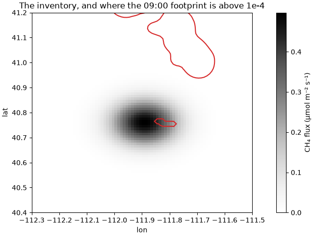
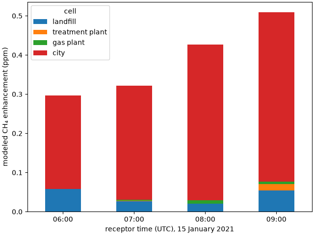

Tutorial: From Footprints To Concentrations#
A footprint says how much each grid cell influences a measurement. Multiply it by how much each cell emits, add it all up, and you have the enhancement, the rise in concentration at the receptor that those emissions explain. Comparing modeled enhancements with measured ones is how an inventory is tested, and an inversion is built on the same link. In this tutorial we make an emissions map and a few point sources, and model the enhancements a tower should have seen.
The units work out directly. Footprints are in ppm per (µmol m⁻² s⁻¹), so a flux in µmol m⁻² s⁻¹ times a footprint, summed over cells and hours, gives ppm.
The footprints#
We use a small project of four hourly receptors at the University of Utah on 15 January 2021, from 06:00 to 09:00 UTC. The project from Tutorial: A Day Of Tower Footprints, or any project with footprints, works the same way.
In [1]: import numpy as np
In [2]: import pandas as pd
In [3]: import xarray as xr
In [4]: import stilt
In [5]: project = stilt.Project("./my_project")
In [6]: sims = project.simulations
In [7]: feet = [project.simulation(rid, "hrrr").footprint for rid in sims.receptor]
In [8]: feet = [foot for foot in feet if foot is not None] # an empty footprint is None
In [9]: len(feet)
Out[9]: 4
An emissions map#
An inventory is an xarray.DataArray of fluxes in µmol m⁻² s⁻¹ with
lat and lon dimensions. Ours is made up: a city of methane emissions
centered on Salt Lake City, strongest downtown and fading over about 10 km,
on the footprint’s own grid. A real inventory you would open with
xr.open_dataarray("inventory.nc").
In [10]: grid = feet[0]
In [11]: lon, lat = np.meshgrid(grid.lon, grid.lat)
In [12]: distance_km = 111 * np.hypot((lon + 111.89) * np.cos(np.radians(40.76)), lat - 40.76)
In [13]: inventory = xr.DataArray(
....: 0.5 * np.exp(-((distance_km / 10) ** 2)),
....: coords={"lat": grid.lat, "lon": grid.lon},
....: dims=("lat", "lon"),
....: attrs={"units": "umol m-2 s-1"},
....: )
....:
In [14]: import matplotlib.pyplot as plt
In [15]: fig, ax = plt.subplots(layout="constrained")
In [16]: inventory.plot(ax=ax, cmap="Greys", cbar_kwargs={"label": "CH₄ flux (µmol m⁻² s⁻¹)"})
Out[16]: <matplotlib.collections.QuadMesh at 0x7b3ff39dc550>
In [17]: feet[-1].sum("time").plot.contour(ax=ax, levels=[1e-4], colors="tab:red", add_labels=False)
Out[17]: <matplotlib.contour.QuadContourSet at 0x7b3ff1da1160>
In [18]: ax.set_xlim(-112.3, -111.5); ax.set_ylim(40.4, 41.2);
In [19]: ax.set_title("The inventory, and where the 09:00 footprint is above 1e-4");


foot.stilt.enhancement multiplies a footprint by the inventory, cell by
cell, for each hour of the footprint. Summed over the hours, it is the
receptor’s enhancement:
In [20]: modeled = pd.Series(
....: {foot.stilt.receptor.time: float(foot.stilt.enhancement(inventory).sum()) for foot in feet},
....: name="city",
....: )
....:
In [21]: modeled
Out[21]:
2021-01-15 06:00:00 0.238288
2021-01-15 07:00:00 0.291821
2021-01-15 08:00:00 0.397760
2021-01-15 09:00:00 0.433454
Name: city, dtype: float64
The enhancement grows from 0.24 ppm at 06:00 UTC to 0.43 ppm at 09:00 (23:00 to 02:00 in Salt Lake City). The city lies under the tower, and as the night goes on the footprint over it doubles, because the air near the ground mixes less and lingers over the city longer.
An inventory with a time dimension works the same way, each footprint
hour taking the flux step it falls in. How the steps are read, and what to
do when the inventory’s grid differs from the footprint’s, is in
Summing Footprints: Areas And The Jacobian (“Footprints times a flux”).
A few point sources#
For a handful of known sources, such as a landfill or a treatment plant,
draw a small window around each one with stilt.Mesh.from_windows().
foot.stilt.aggregate sums the footprint inside each window, and each
sum times the source’s flux is its share of the enhancement. Make each
window at least two footprint cells wide, because a smaller window falls
inside one cell and the footprint cannot say how much of the cell it covers.
# made-up sources: longitude, latitude, flux averaged over the window (µmol m⁻² s⁻¹)
In [22]: sources = {
....: "landfill": (-111.95, 41.23, 1.5),
....: "treatment plant": (-111.78, 40.78, 0.8),
....: "gas plant": (-111.70, 40.97, 0.5),
....: }
....:
In [23]: windows = stilt.Mesh.from_windows(
....: [(x, y) for x, y, _ in sources.values()],
....: size=0.05, # window width in degrees
....: ids=list(sources),
....: )
....:
In [24]: flux = pd.Series({name: f for name, (_, _, f) in sources.items()})
In [25]: rows = {}
In [26]: for foot in feet:
....: hours = foot.indexes["time"]
....: whole_run = pd.IntervalIndex.from_tuples(
....: [(hours.min(), hours.max() + pd.Timedelta("1h"))], closed="left"
....: )
....: in_window = foot.stilt.aggregate(windows, whole_run).iloc[:, 0] # one sum per source
....: rows[foot.stilt.receptor.time] = in_window * flux
....:
In [27]: by_source = pd.DataFrame(rows).T
In [28]: by_source
Out[28]:
cell landfill treatment plant gas plant
2021-01-15 06:00:00 0.058369 0.000000 0.000000
2021-01-15 07:00:00 0.026310 0.001188 0.002808
2021-01-15 08:00:00 0.020597 0.000002 0.008820
2021-01-15 09:00:00 0.054162 0.016467 0.005595
The landfill, 50 km north, adds 0.02 to 0.11 ppm, because the air passed over it on its way down the valley. The treatment plant, 5 km east of the tower, adds almost nothing until 09:00, the only hour whose footprint reaches it. A source matters only where the footprint is, however much it emits.
Together#
The modeled enhancement at each hour is the sum of the parts:
In [29]: total = by_source.assign(city=modeled)
In [30]: total.index = total.index.strftime("%H:%M")
In [31]: fig, ax = plt.subplots(layout="constrained")
In [32]: total.plot.bar(ax=ax, stacked=True, rot=0)
Out[32]: <Axes: >
In [33]: ax.set_xlabel("receptor time (UTC), 15 January 2021")
Out[33]: Text(0.5, 0, 'receptor time (UTC), 15 January 2021')
In [34]: ax.set_ylabel("modeled CH₄ enhancement (ppm)");


To compare with a measurement, subtract a background from it first, or add one to the model. The background is the concentration of the air before it reached the region, and Background shows how to get it.
This is the forward half of an inversion. An inversion goes the other way,
adjusting the emissions until the modeled enhancements best match the
measured ones. project.jacobian builds the matrix it needs, one
footprint per row summed onto the cells or regions being solved for
(Summing Footprints: Areas And The Jacobian).